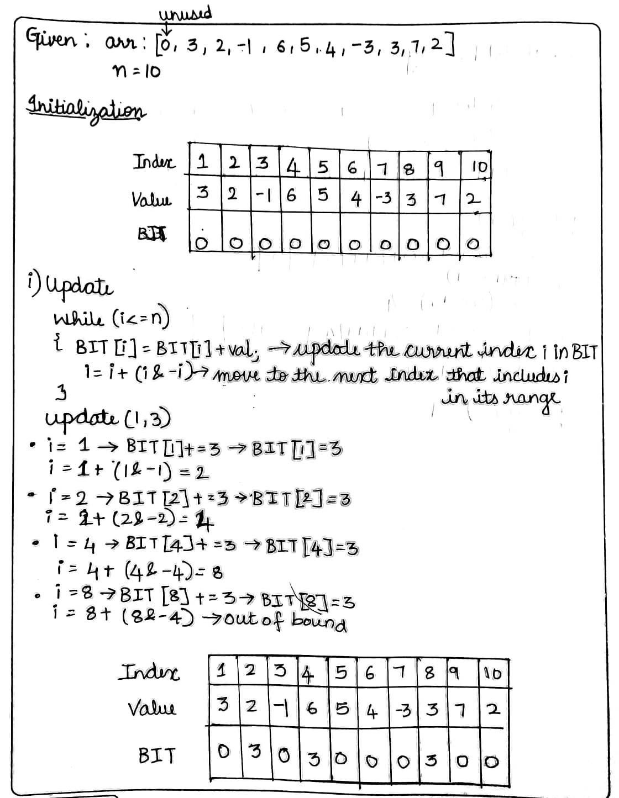
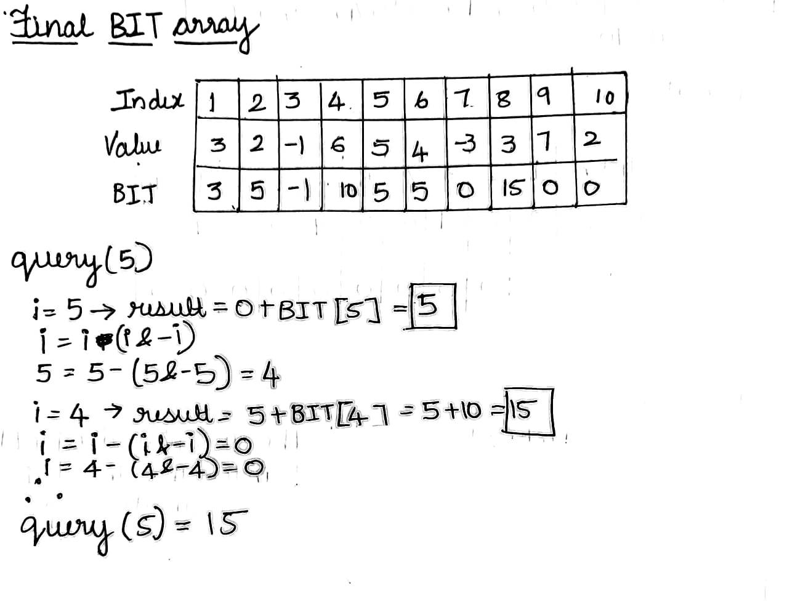

Fenwick Tree (Binary Indexed Tree)
Category: Data Structures, Range Query
Description: Efficient data structure for cumulative frequency tables and prefix sums, supporting updates and queries in logarithmic time.
📦 Business Cases:
- Real-time update and query of metrics in AWS CloudWatch dashboards.
- Maintaining prefix sums or counts in large-scale distributed logs.
- Efficient event counting in AWS Lambda streaming data.
🧠 How It Works?
- Uses binary indexing to store partial sums.
- Updates and prefix queries are performed by traversing parent nodes via bit manipulation.
- A normal array takes O(k) time to get the sum from 1 to k, while a Fenwick Tree takes only O(log n) time for both prefix sum and updates, making it much faster for large data.
- Each node at index i stores the sum of a specific range, determined by the last set bit of i (using i & -i), allowing it to jump smartly through indices using binary operations.

📊 Visualization
Initial Array
The array values are:
Index: 1 2 3 4 5 6 7 8 9 10
Values: 3 2 -1 6 5 4 -3 3 7 2
Fenwick Tree Update:
Fenwick Tree Query:
👩💻 View Code
Click here for code🧮 Complexity Analysis
- Build Time: O(N log N)
- Update: O(log N)
- Prefix Query: O(log N)
- Space: O(N)